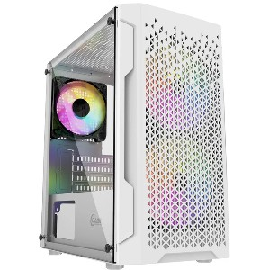
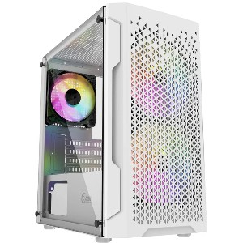

Почему наши готовые ПК так хороши?
Мы делаем производительные и качественные ПК в соответствии цены, широкий выбор.
Если по долгу службы или по зову сердца вы колесите по городам и весям — без ноутбука не обойтись.
В противном случае следует выбрать стационарный ПК. Разберем несколько типичных случаев.
Стоимость ПК на 20–25 % меньше, чем у ноутбука. Сэкономив 1/5 бюджета, можно собрать современный мощный ПК с хорошей видеокартой и большим монитором.
Самая бюджетная сборка ПК обошлась в 21 000 рублей, из которых 25 % — это монитор.
Широкий выбор системников на любой вкус
 

Сотрудничаем с крупными компаниями
Такие как:
NVIDIA,
AMD,
Intel,
MSI,
и другие возможновы слышали Dell считается компанией ИТ с самым большим доходом в мире.
Ее годовая прибыль составляет $108 млрд., а количество клиентов по всему миру превышает отметку в 10 млн.
Интересно, что почти 99% компаний из рейтинга Fortune 500 сотрудничают с этим "айти" гигантом.
Какой ПК мне купить?
Компьютеры сегодня используются повсеместно: дома, для работы и учебы, игр и развлечений.
Если вы решили приобрести новый компьютер, уверены, что технический прогресс не стоит на месте, и сомневаетесь
с выбором, отвечающим вашим требованиям, то мы расскажем, на что обратить внимание при подборе базового или игрового компьютера.
Возможности ПК напрямую зависят от выбора комплектующих. При этом нужно не только выбрать детали с самыми лучшими характеристиками,
но еще и подобрать совместимые друг с другом элементы. Правильный выбор комплектующих позволяет добиться желаемых результатов и получить
на выходе компьютер, который полностью сможет справляться поставленными задачами.
Выше мы уже рассмотрели серии ПК, которые представлены в нашем магазине. Наличие таких сборок позволяет сэкономить время и силы, быстро подобрать оптимальную конфигурацию.
А чтобы понимать, чем один компьютер отличается от другого, рассмотрим далее плюсы и минусы того или иного оборудования, узнаем на что, необходимо обратить внимание в выбранной конфигурации.
Первое на чем, стоит заострить внимание, это качество самих деталей. Детали проверенного бренда в большинстве случаев отличаются надежностью и долговечностью, а это значит, что из-за одной
детали компьютер не утратит работоспособность и сохранит все данные. В большинстве случаев в интернете можно легко найти массу отзывов и полезной информации по конкретной модели, узнать в подробностях как она работает,
а также изучить проблемы при наличии таковых и способы их решения. В то время как малоизвестный бренд становится котом в мешке. Ведь на реальные показатели могут отличаться от заявленных.
Ноутбук или ПК?
Перед каждым, кто хочет купить ПК для игры, работы или учебы, возникает вопрос, что лучше — компьютер или ноутбук? Как первый, так и второй имеет свои преимущества, поэтому решение зависит от приоритетов пользователя.
Давайте рассмотрим оба варианта с позиции главных критериев выбора.
Стационарный компьютер — это статичный ПК, который размещается на столе или под ним и подключается к сети. Он состоит из системного блока, монитора и периферийных устройств (клавиатуры и мышки). Приобретая стационарный
компьютер, можно выбрать для любой его части компоненты с необходимыми характеристиками. В этом смысле возможности ноутбука несколько ограничены.
Ноутбук — это портативный переносной компьютер, оснащенный портами для периферийных устройств. Он имеет встроенный монитор и клавиатуру, а также тачпад, который может заменять собой мышку. Лэптопы могут работать как от
сети, так и от батареи. Большинство моделей работает от батареи около 12 часов, после чего нуждается в подзарядке.